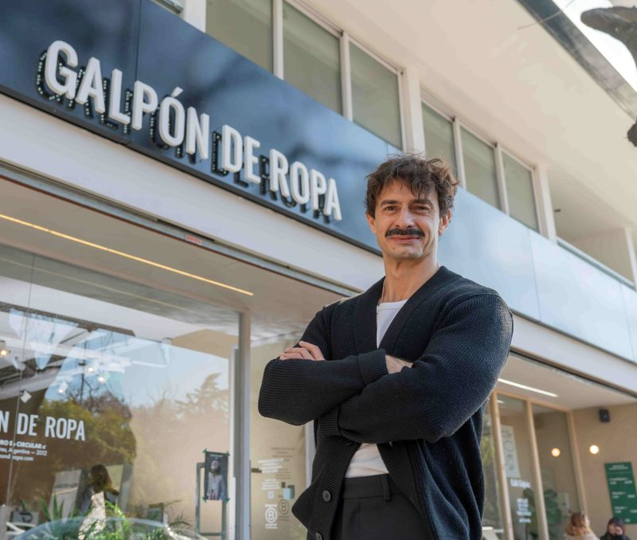

Galpón de Ropa: el emprendimiento que nació en un taller abandonado y llegó a los shoppings
Dos amigos de 22 años empezaron a vender ropa usada en 2012. Hoy Galpón de Ropa es una Empresa B con 94 empleados y unas 40.000 prendas por mes.
Nació en 2012 con una web precaria y ventas por Facebook, creció en un taller mecánico abandonado de Villa Crespo y hoy tiene locales en shoppings. La historia de Galpón de Ropa muestra cómo la ropa usada se volvió un negocio.
Galpón de Ropa es hoy una de las empresas de moda circular más conocidas de Argentina. En septiembre de 2026 abrió su primer punto de venta dentro de un shopping, en el DOT Baires, y llevó la ropa de segunda mano a un circuito de consumo masivo. Pero su historia empezó mucho antes y con muy pocos recursos.
Dos amigos y una hora por día
Según iProfesional, la empresa nació en 2012 de la inquietud de dos amigos, Gonzalo Ades Posse y Juan Ezequiel Báez. Tenían 22 años: uno trabajaba como mozo y el otro como recepcionista de madrugada. Le dedicaban apenas una hora diaria al proyecto, con la idea de crear un espacio donde comprar ropa usada fuera una experiencia de categoría.
Empezaron con una web precaria y vendiendo por Facebook. Lo que comenzó con ropa de amigos y familiares fue tomando forma como un modelo de curaduría, en el que cada prenda se selecciona antes de salir a la venta.
El taller mecánico de Villa Crespo
El verdadero salto llegó en 2014, cuando alquilaron un taller mecánico abandonado en Villa Crespo. Lo llamaron “Galpón”, un nombre que quedó como identidad de la marca. Ese espacio definió su sello: una estética cuidada, procesos transparentes y una curaduría rigurosa que buscaba eliminar el prejuicio sobre la feria americana.
Un negocio basado en datos
Detrás de los percheros hay un sistema de gestión propio. Según el CEO, el software desarrollado por la empresa permite decidir con datos y manejar unas 40.000 prendas por mes. La compañía asegura que acumula más de 2,7 millones de prendas recirculadas. Son cifras que informa la propia empresa y que no pudimos contrastar con una fuente independiente.
El crecimiento fue orgánico, sin inversión externa: la empresa reinvirtió sus márgenes en tecnología y equipo. Es Empresa B certificada desde 2023 y, según iProfesional, en mayo de 2026 tenía un equipo de 94 personas, de las cuales el 72% son mujeres. Además, gestiona los descartes con cooperativas de recuperadores urbanos y con donaciones a escuelas.
Del galpón al shopping
En 2023, Galpón de Ropa abrió un local en el subsuelo de Alto Palermo, su séptimo en la Ciudad de Buenos Aires. Funciona como “Punto de Toma”: compra ropa, pero no la vende. Los clientes reciben un crédito en la aplicación ¡appa! y más de 30 marcas del shopping se adhirieron a la propuesta, según Economía Sustentable.
En septiembre de 2026 dio el paso siguiente: inauguró en el DOT Baires un local de 112 metros cuadrados, su primer punto de venta en un gran centro comercial. Hoy suma 11 puntos de venta en Buenos Aires, más un punto de toma en Alto Palermo y una plataforma de comercio electrónico con alcance nacional.
Un CEO que viene del acero
Desde mayo de 2025, la empresa está liderada por Luciano Arrighi. Es contador de la UBA y trabajó en PwC, en IBM y durante 13 años en Ternium, del Grupo Techint, donde vivió ocho años como expatriado entre Luxemburgo y México. Luego dejó esa carrera, estudió lujo en París, Milán y Dubái y completó un máster ejecutivo en management para la industria del lujo.
Su planteo, según iProfesional, es que la sostenibilidad es el nuevo lujo y que las prendas circulares con historia y curaduría cumplen con ese criterio. Es una definición del propio CEO, no un dato medido.
Qué viene
Según la entrevista, los planes de la compañía tienen tres ejes: expandirse a más ciudades de Argentina, armar un sistema de franquicias que permita crecer más rápido sin perder la curaduría, y salir al exterior con la meta de convertirse en referente de la moda circular en América Latina. Son objetivos declarados, no resultados.
Esa expansión se da en un contexto exigente para la industria de la moda: según FITA, la actividad textil acumuló una caída de 22,6% en los primeros siete meses de 2026. La historia de Galpón de Ropa muestra que, en ese escenario, la reventa fue uno de los segmentos que abrió locales.